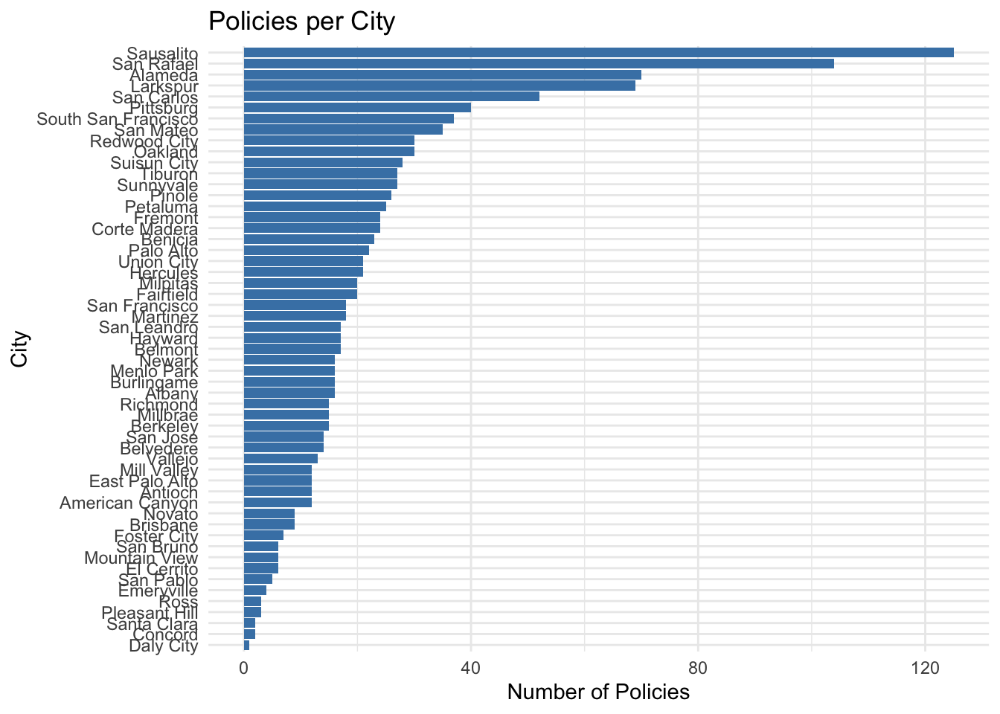
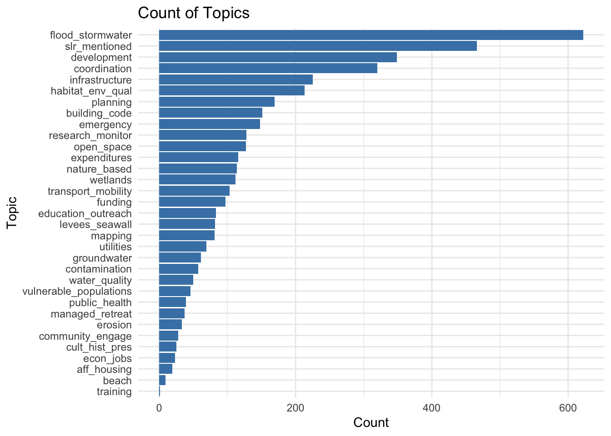

library(readxl)
library(tidyverse)
# download data from Bay Adapt Github
url <- "https://github.com/BCDC-GIS/Bay-Adapt-Currents/blob/e8e4ec0ad1ee6888070975a138a3d7d075c1a40f/Sea%20Level%20Rise%20in%20General%20Plans/Cities.xlsx?raw=true"
download.file(url, destfile = "data/Cities_Simplified.xlsx")
cities_data <- read_excel("data/Cities_Simplified.xlsx")[,1:41]
colnames(cities_data) <- c('city',
'county',
'doc_type',
'year',
'element',
'policy',
'program',
'text',
'aff_housing',
'beach',
'building_code',
'community_engage',
'contamination',
'coordination',
'cult_hist_pres',
'development',
'econ_jobs',
'education_outreach',
'emergency',
'erosion',
'expenditures',
'funding',
'planning',
'habitat_env_qual',
'infrastructure',
'managed_retreat',
'mapping',
'levees_seawall',
'nature_based',
'open_space',
'public_health',
'research_monitor',
'training',
'transport_mobility',
'utilities',
'vulnerable_populations',
'water_quality',
'wetlands',
'flood_stormwater',
'groundwater',
'slr_mentioned'
)
# mutate across everything between aff_housing and slr_mentioned to be factors, converting "-" or NA to 0 and "1" to 1
cities_data <- cities_data |>
mutate(across(aff_housing:slr_mentioned, ~ case_when(. == "1" ~ 1,
TRUE ~ 0))) |>
mutate(across(aff_housing:slr_mentioned, as.numeric)) |>
mutate(across(city:element, as.factor))HW 2 EDA
First, I load in the data directly from the github repo where it is stored and do some initial cleaning so that I can better look at the topics of interest. To start, I plot the number of policies per city and the number of times each topic is considered across all cities.
# cities and how many policies they have
cd_cities_plot <- count(cities_data, city) |>
arrange(desc(n))
# plot
ggplot(cd_cities_plot, aes(x = reorder(city, n), y = n)) +
geom_bar(stat = "identity", fill = "steelblue") +
coord_flip() +
labs(title = "Policies per City ",
x = "City",
y = "Number of Policies") +
theme_minimal()
# count of how many times each topic considered
cd_topic_sums <- cities_data |>
select(aff_housing:slr_mentioned) |>
summarise(across(everything(), sum, na.rm = TRUE)) |>
pivot_longer(everything(), names_to = "topic", values_to = "count") |>
arrange(desc(count))
# plot
ggplot(cd_topic_sums, aes(x = reorder(topic, count), y = count)) +
geom_bar(stat = "identity", fill = "steelblue") +
coord_flip() +
labs(title = "Count of Topics",
x = "Topic",
y = "Count") +
theme_minimal()
Github Copilot was used to expedite the coding process.